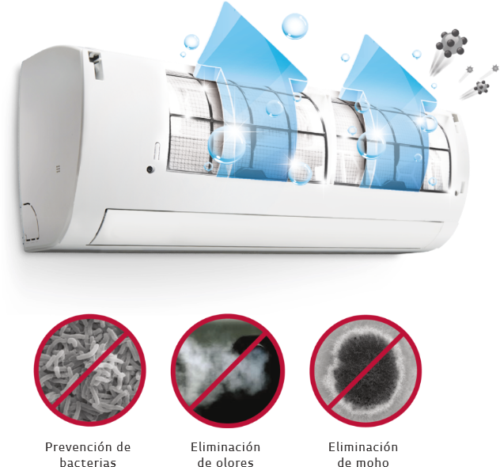

		<div class="row text-center text-lg-left ventanas" style="background-color: #fff;  background:#fff;">
			<div class="col-lg-5 py-lg-6 py-4 pl-lg-5 pr-lg-6">
				<div></div>
				<div class="mt-lg-6 my-3"><h2 class="titulov">LIMPIEZA AUTOMÁTICA</h2></div>
				<div class="subtitulo py-lg-4">¿Cómo funciona?</div>
				<div class="texto">Limpia el Filtro Mediante el Tránsito Constante de Aire, la función de limpieza automática previene la formación de bacterias y moho en el intercambiador de calor, mejorando 
la calidad del  ambiente.</div>
			</div>
			<div class="col-lg-7 px-lg-5 py-lg-6 pb-4">
				
				<div></div>
			</div>
		</div>